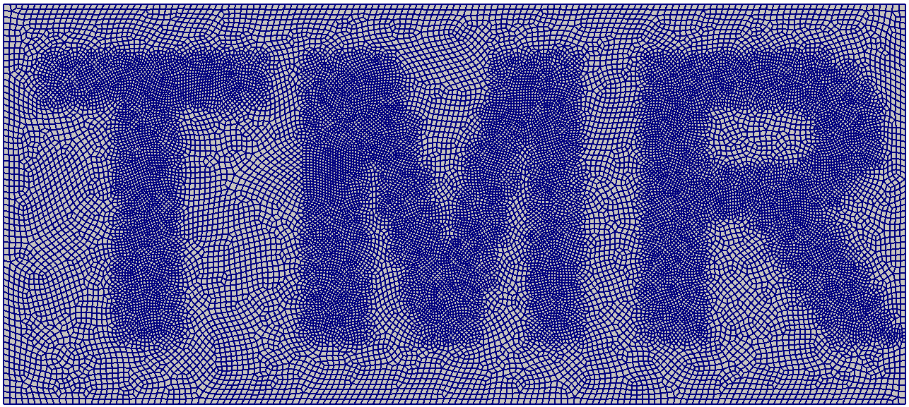
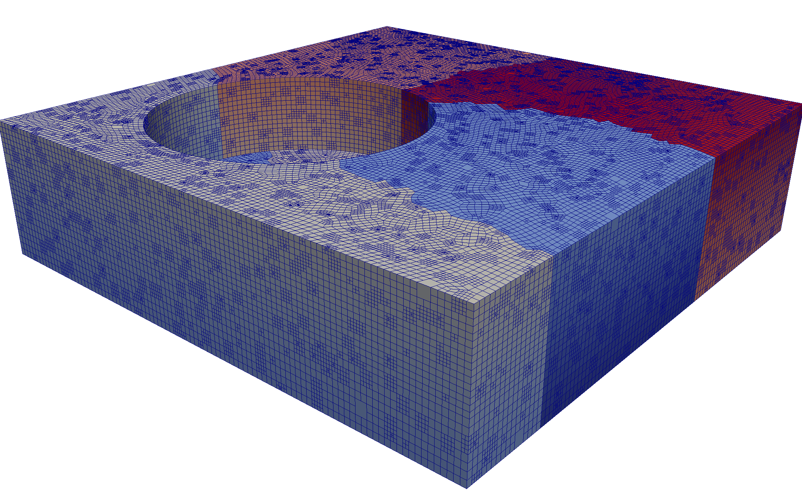

TMR Overview¶
TMR is a mesh generation and refinement tool for creating large-scale quadrilateral and octree meshes in parallel. TMR creates a coarse quadrilateral or hexahedral mesh and builds a more refined quadtree or octree meshes on each coarse element. To ensure compatibility, TMR computes the necessary compatibility relationships between adjacent quadrilateral or hexahedral elements of different refinement levels. The goal is to simplify the high-level mesh generation calls, while enabling the efficient creation of large-scale meshes.
TMR implements an abstract geometry layer that is used to query the underlying geometric and topological information from a CAD representation. This geometry layer has been implemented using EGADS and OpenCASCADE and in principle could be implemented for other CAD kernels. A simple B-spline library is also implemented, but is primarily for demonstration/educational purposes.
The coarse hexahedral mesh generation is performed via sweeping or multi-sweeping. This sweeping capability imposes restrictions on the input geometry. In particular, the sweep must consist of a source to target faces that are topologically equivalent with surrounding faces that are structured. Automatic identification of sweepable volumes is implemented, but may not be sufficiently robust. In these cases, manual specification of the source and target faces, and the swept direction may be required.
Once the coarse hexahedral mesh has been created, refined octree meshes can be generated by preparing the geometry for refinement. This step creates a model with coarse face-matched hexahedral volumes that are non-degenerate. The local octree refinement on each mapped volume can then be performed independently. A global balancing operation is required to impose the condition that any two adjacent elements have a difference of only one level of refinement. This balancing operation is implemented in parallel. Once the globally refined element mesh is created, it is necessary to uniquely order all the nodes in the mesh. This operation allows for higher-order elements with different nodal layouts.
Please cite us¶
The key contributions and development of TMR are described in the following paper: Ting Wei Chin, Mark K. Leader, Graeme J. Kennedy, A scalable framework for large-scale 3D multimaterial topology optimization with octree-based mesh adaptation, Advances in Engineering Software, Volume 135, 2019.
@article{Chin:2019,
title = {A scalable framework for large-scale 3D multimaterial topology optimization with octree-based mesh adaptation},
journal = {Advances in Engineering Software},
volume = {135},
year = {2019},
doi = {10.1016/j.advengsoft.2019.05.004},
author = {Ting Wei Chin and Mark K. Leader and Graeme J. Kennedy}}
Python interface and code structure¶
There are two interfaces to TMR: the C++ interface and the Python-level
interface. TMR is implemented in C++, so the interface through C++
contains all publicly accessible class member functions. The Python-level
interface wraps the most important classes and functions, but does not provide
an interface to all lower-level operations.
There are three primary types of classes within TMR:
Geometry and topology-level classes which interface with the underlying geometry kernel
Serial mesh-level classes which are used to create moderate-size quadrilateral and hexahedral meshes based on the input geometry
Quadtree and Octree-level classes which are used to create, modify, refine and extract information from the quad/octrees.
Examples¶
Background and theory¶
Installation¶
TMR has several dependencies. The current version of TMR requires the following external libraries:
MPI
BLAS/LAPACK
EGADS/egads4py (for geometry and topology information)
TACS (for finite-element analysis)
ParOpt (for topology optimization)
Blossom V (for perfect matching in the Quad-Blossom algorithm)
METIS (for partitioning the coarse hexahedral/quadrilateral meshes)
OpenCASCADE
In addition, the python interface for TMR requires the following:
numpy
mpi4py
Cython
Detailed installation instructions are located here: